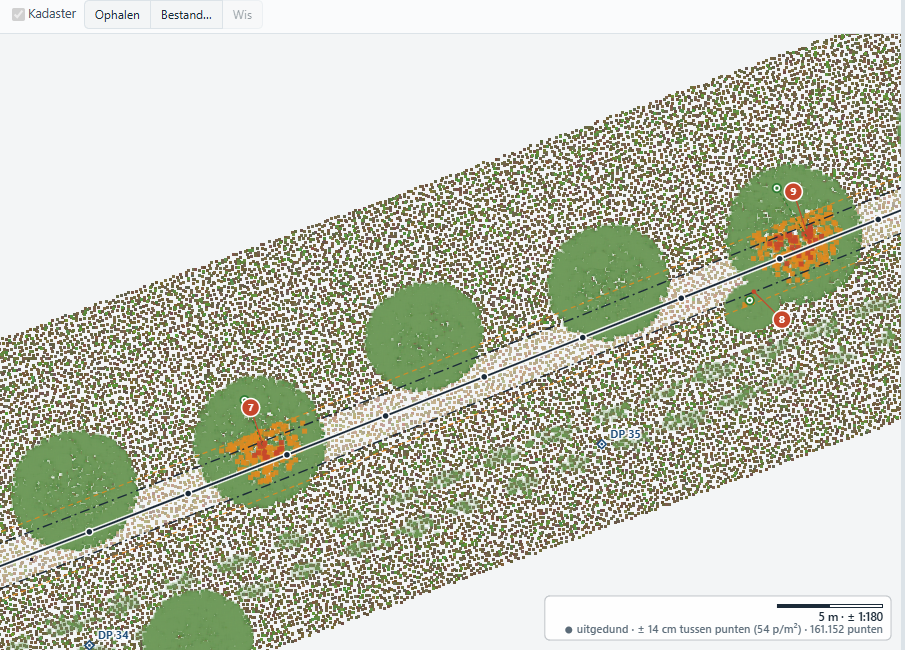
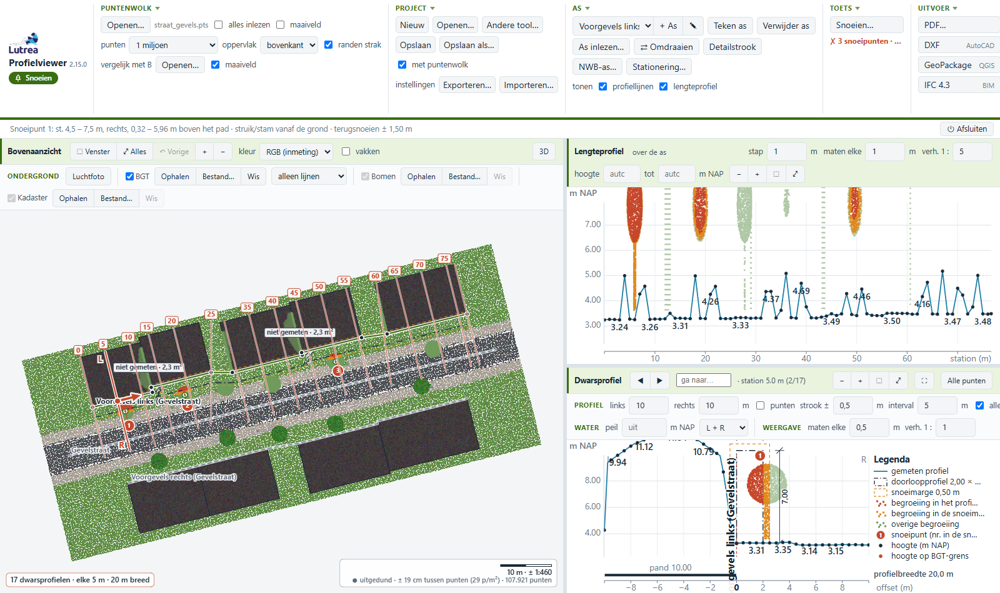
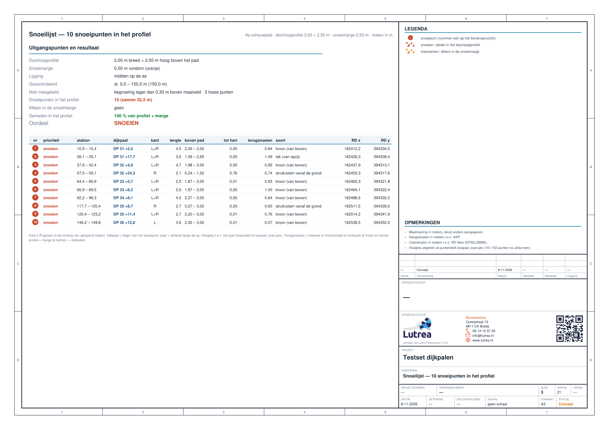

Lutrea Profielviewer · tool 4 van 4
Snoeien
Takken in de vrije ruimte boven pad of weg, of langs de gevel

Profielen ToolDoorvaarthoogteDoorrijhoogteSnoeien
De tool legt een doorloopprofiel over het pad en vindt elke tak die erin steekt: waar, hoe hoog, hoeveel er terug moet en op welk perceel de boom staat. Een genummerde snoeikaart en snoeilijst, klaar voor de ploeg en de brief aan de eigenaar.
1
Inlezen
De scan van het pad of de straat. Takken blijven staan: de begroeiing wordt in 3D gelezen.
2
As leggen
Langs het pad tekenen of inlezen, of langs de straat uit de voorgevels van de BGT-panden.
3
Controleren
Standaard 2,00 × 2,50 m met 0,50 m marge, of van de gevel tot een vaste afstand. Gras en ruis tellen niet mee.
4
Opleveren
Snoeikaart, snoeilijst en snoeilijst per perceel als PDF, CSV voor Excel en GeoPackage.

2,00 × 2,50 m
standaard doorloopprofiel met 0,50 m snoeimarge; alles instelbaar
Rood / oranje
snoeien (in het profiel) of meenemen (alleen in de marge)
Per perceel
stam en kadastraal perceel bij elk snoeipunt, voor de brief aan de eigenaar
Langs gevels
as uit de BGT-voorgevels, de gevel zelf telt niet mee


Wat je krijgt
- Snoeipunten genummerd langs de as, met station of dijkpaal
- Per punt: kant, hoogte boven het pad, afstand tot het hart en hoeveel terug
- De soort: tak van opzij, kroon van boven, of struik/stam vanaf de grond
- Kadastrale percelen van PDOK met sectie en nummer
- 3D: het profiel als tunnel over het pad; punt voor punt aflopen
- Dekkingskaart: waar profiel of marge niet gemeten is
Waarom het werkt
- Een haag of bomenrij wordt in hanteerbare stukken genummerd (max. 5 m)
- Het profiel volgt het pad, ook op een helling
- Het maaiveld komt uit de scan zelf, niet uit een model dat door de kronen loopt
- "Niets gevonden" betekent ook echt niets: de dekkingskaart laat de gaten zien
- Eén lijst voor de snoeiploeg, één per perceel voor de eigenaar